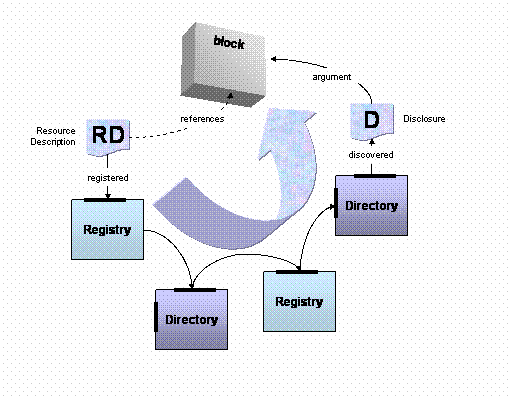

Object Model
Federation
The following illustration depicts a possible business cycle of a resource description used as an argument to a server:
- Creation of the resource description, containing a description of the a supplier capability and URI reference to the server;
- registration of the resource description under a general marketplace registry;
- discovery of the capability under a general market directory in the form of a disclosure instance;
- subsequent referral of the description to vertical domain marketplace;
- discovery of the disclosure under the vertical marketplace;
- application of the resulting disclosure instance as an argument to a server
Server applications (processors) can take advantage of referral information in Disclosure chains as part of sophisticated applications supporting referral reward schemes and market site value assessment.
Service referral across marketplace systems.
